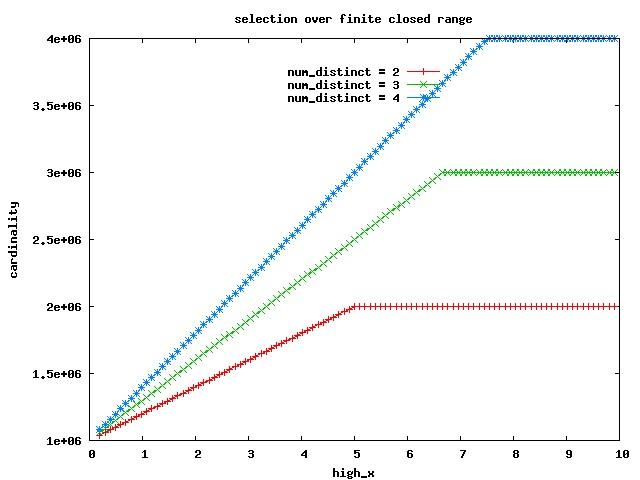

select x from t where x >= low_x and x <= low_x + wi.e. we'll move to the (bounded, closed) case.
cardinality = num_rows * w / (max_x - min_x) + 2 * num_rows / num_distinct[JLB]
SQL> select x from t where x >= 2 - 0.001 and x <= 2; -------------------------------------------------------------------------- | Id | Operation | Name | Rows | Bytes | Cost (%CPU)| Time | -------------------------------------------------------------------------- | 0 | SELECT STATEMENT | | 1800K| 5273K| 1439 (6)| 00:00:18 | |* 1 | TABLE ACCESS FULL| T | 1800K| 5273K| 1439 (6)| 00:00:18 | -------------------------------------------------------------------------- SQL> select x from t where x >= 2 - 2 and x <= 2; -------------------------------------------------------------------------- | Id | Operation | Name | Rows | Bytes | Cost (%CPU)| Time | -------------------------------------------------------------------------- | 0 | SELECT STATEMENT | | 1800K| 5273K| 1439 (6)| 00:00:18 | |* 1 | TABLE ACCESS FULL| T | 1800K| 5273K| 1439 (6)| 00:00:18 | --------------------------------------------------------------------------
let B = (max_x - min_x) / num_distinct let height_ramp = num_rows / num_distinct cardinality = height_ramp + height_ramp * (high_x - min_x) / B Eg for num_distinct=4: B = 2.5; height_ramp = 1,000,000 for low_x = 1.765830 => cardinality = 1000000 + 1000000 * (1.765830+0.001-0) / 2.5 = 1706732 which is exactly the value we observe in the blue line data.
SQL> select x from t where x >= 0 and x <= 2.123; -------------------------------------------------------------------------- | Id | Operation | Name | Rows | Bytes | Cost (%CPU)| Time | -------------------------------------------------------------------------- | 0 | SELECT STATEMENT | | 1849K| 5417K| 1439 (6)| 00:00:18 | |* 1 | TABLE ACCESS FULL| T | 1849K| 5417K| 1439 (6)| 00:00:18 | -------------------------------------------------------------------------- SQL> select x from t where x >= 2 and x <= 2.123; -------------------------------------------------------------------------- | Id | Operation | Name | Rows | Bytes | Cost (%CPU)| Time | -------------------------------------------------------------------------- | 0 | SELECT STATEMENT | | 1849K| 5417K| 1439 (6)| 00:00:18 | |* 1 | TABLE ACCESS FULL| T | 1849K| 5417K| 1439 (6)| 00:00:18 | -------------------------------------------------------------------------- Note how the value of low_x is ignored, even if it is equal to 0 (min_x).
select x from t where x >= low_x and x <= high_xThe usual diagram (click to get the data sets for the red, green and blue line) is: 
SQL> select x from t where x >= 0.1 and x <= 7; -------------------------------------------------------------------------- | Id | Operation | Name | Rows | Bytes | Cost (%CPU)| Time | -------------------------------------------------------------------------- | 0 | SELECT STATEMENT | | 3800K| 10M| 1448 (7)| 00:00:18 | (ORIGINAL) |* 1 | TABLE ACCESS FULL| T | 3800K| 10M| 1448 (7)| 00:00:18 | -------------------------------------------------------------------------- SQL> select x from t where x >= 0.1 and x <= 2.5; -------------------------------------------------------------------------- | Id | Operation | Name | Rows | Bytes | Cost (%CPU)| Time | -------------------------------------------------------------------------- | 0 | SELECT STATEMENT | | 2000K| 5859K| 1440 (6)| 00:00:18 | (LEFT BAND) |* 1 | TABLE ACCESS FULL| T | 2000K| 5859K| 1440 (6)| 00:00:18 | -------------------------------------------------------------------------- SQL> select x from t where x <= 2.5 and x <= 7; -------------------------------------------------------------------------- | Id | Operation | Name | Rows | Bytes | Cost (%CPU)| Time | -------------------------------------------------------------------------- | 0 | SELECT STATEMENT | | 3800K| 10M| 1448 (7)| 00:00:18 | (CENTRAL) |* 1 | TABLE ACCESS FULL| T | 3800K| 10M| 1448 (7)| 00:00:18 | -------------------------------------------------------------------------- We've added the 2 "<= or >=" operators shown underlined, so: 2000K + 3800K - 2 * 1000K = 3800K, as requested.
SQL> select x from t where x >= 0.1 and x <= 9; -------------------------------------------------------------------------- | Id | Operation | Name | Rows | Bytes | Cost (%CPU)| Time | -------------------------------------------------------------------------- | 0 | SELECT STATEMENT | | 4000K| 11M| 1449 (7)| 00:00:18 | (ORIGINAL) |* 1 | TABLE ACCESS FULL| T | 4000K| 11M| 1449 (7)| 00:00:18 | -------------------------------------------------------------------------- SQL> select x from t where x >= 0.1 and x <= 2.5; -------------------------------------------------------------------------- | Id | Operation | Name | Rows | Bytes | Cost (%CPU)| Time | -------------------------------------------------------------------------- | 0 | SELECT STATEMENT | | 2000K| 5859K| 1440 (6)| 00:00:18 | (LEFT BAND) |* 1 | TABLE ACCESS FULL| T | 2000K| 5859K| 1440 (6)| 00:00:18 | -------------------------------------------------------------------------- SQL> select x from t where x <= 2.5 and x <= 7.5; -------------------------------------------------------------------------- | Id | Operation | Name | Rows | Bytes | Cost (%CPU)| Time | -------------------------------------------------------------------------- | 0 | SELECT STATEMENT | | 4000K| 11M| 1449 (7)| 00:00:18 | (CENTRAL) |* 1 | TABLE ACCESS FULL| T | 4000K| 11M| 1449 (7)| 00:00:18 | -------------------------------------------------------------------------- SQL> select x from t where x <= 7.5 and x <= 9; -------------------------------------------------------------------------- | Id | Operation | Name | Rows | Bytes | Cost (%CPU)| Time | -------------------------------------------------------------------------- | 0 | SELECT STATEMENT | | 2000K| 5859K| 1440 (6)| 00:00:18 | (RIGHT BAND) |* 1 | TABLE ACCESS FULL| T | 2000K| 5859K| 1440 (6)| 00:00:18 | -------------------------------------------------------------------------- We've added the 4 "<= or >=" operators shown underlined, so: 2000K + 4000K + 2000K - 4 * 1000K = 4000K, as requested.NB Equivalently, one could say that the range is considered "chopped at the central region border(s)" (the part of it extending over the bands is ignored) - (ORIGINAL) and (CENTRAL) being the same. But the method can be applied in general also to semi-open, semi-closed ranges, as we'll see.